The Craft & Mechanics
Clawhammer down-stroke mechanics, historical tunings, and acoustic physics.
Clawhammer banjo · Black old-time tradition
I'm Genell Zuciya. This is where I share my ongoing learnings, archival discoveries, and musical lineages with you in real time.
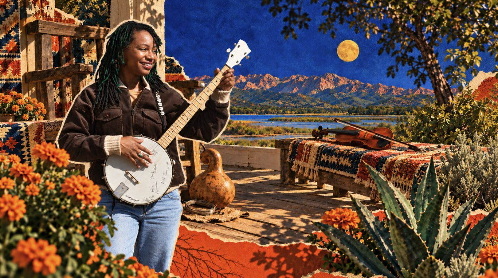
The banjo's story
The banjo is fundamentally an African diasporic creation of the Americas, forged by enslaved people across the Caribbean and colonial North America from ancestral West African gourd lute traditions. It served as the rhythmic engine of early American folk and dance music.
That early musical landscape was actively cross-collaborative. Long before the modern folk revivals, and before commercial record labels divided music into segregated categories, dance and string-band traditions were shaped through direct, porch-to-porch exchanges.
On cabin steps, river landings, and front porches, Black songsters, Indigenous players, Anglo-Celtic fiddlers, and regional immigrant communities influenced, challenged, and learned from one another. My porch exists to trace that lineage with care and in community.
What a banjo is made of
My path to the porch
I'm African-American, raised in Freetown, on Harriet Tubman Lane, in Columbia, Maryland. My great-grandmother was a recycler. My family has a junkyard, and my grandfather ran a hauling business, bringing mulch to people and hauling away what they no longer wanted. It was a grounded upbringing, and it still anchors me.
We always had about ten cats around, and my grandfather raised me to have a holler to call them home.
I was raised on gospel choir and church, and I sang in choir from elementary school all the way through college, with guitar and piano along the way.
Studying abroad, I started diving into folk instrumentation.
As a film student, I spent my senior thesis filming a djembe orchestra: djembe, kora, dunun and more. Filming them started my own journey with the dunun set (dundunba, sangban and kenkeni).
I took erhu lessons in my free time while working abroad as a Disney Imagineer building Shanghai Disneyland.
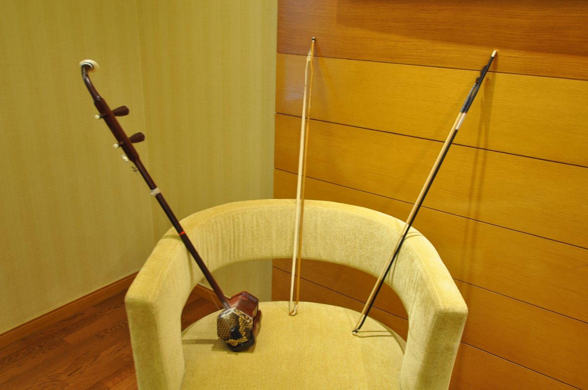
While I was learning the banjo's true history, I was dancing in Los Angeles and going to camps to deepen my craft, like Camp Fareta.
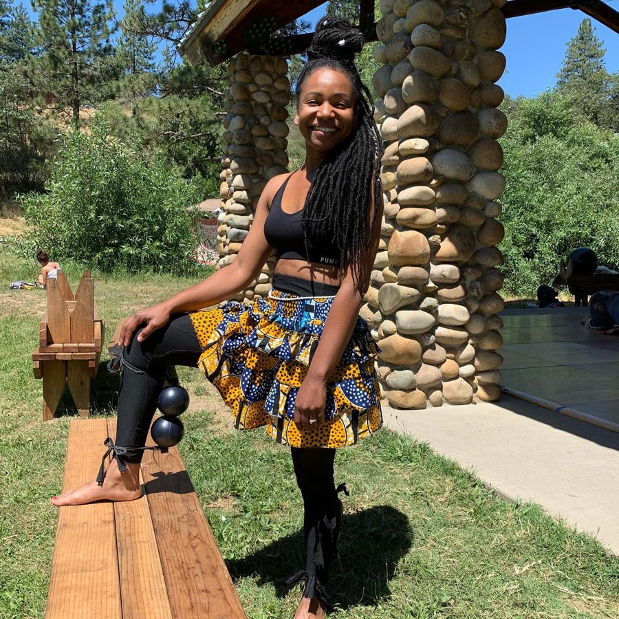
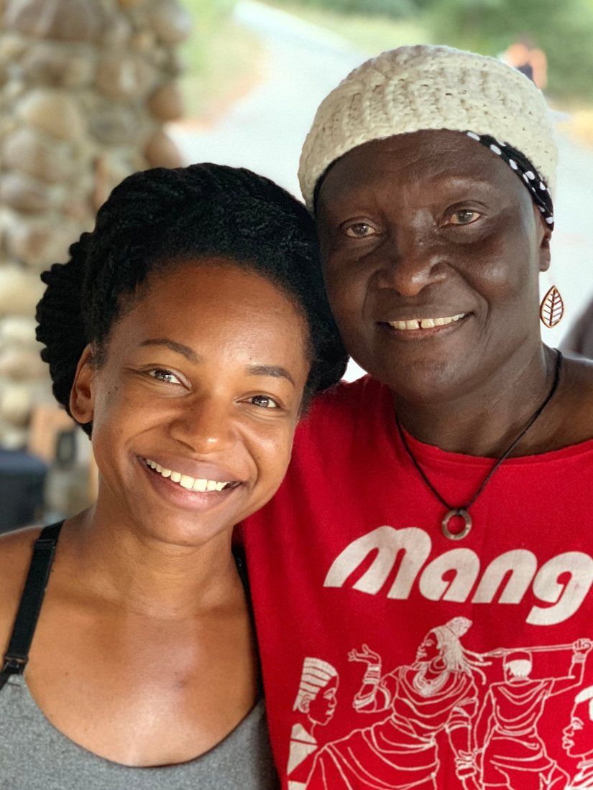
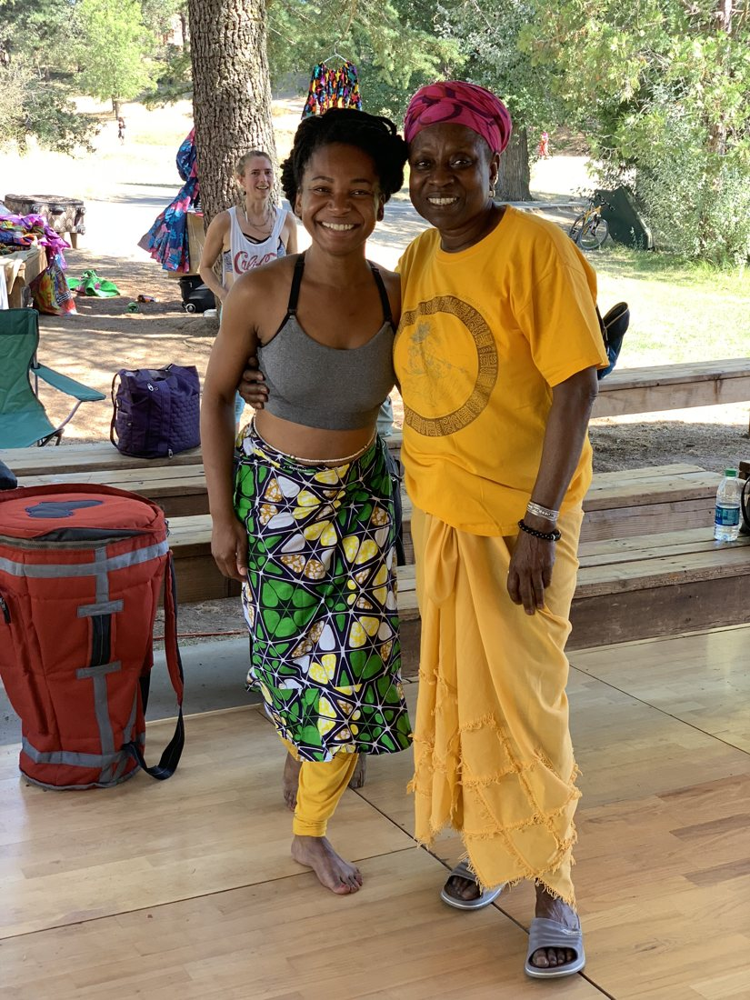
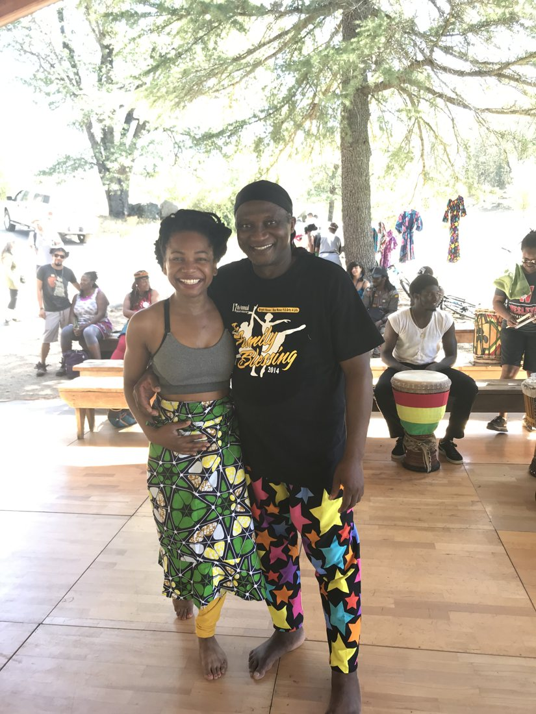
With West African dance greats at Camp Fareta.
Looking for my music community, I learned where the banjo really comes from. It reframed everything I knew about American roots music.
Gratitude to Brandi Waller-Pace and Amadou Kouyate for opening my eyes to the banjo's history.
The dunun journey that started in Guinea kept going. Here I am on the full dunun set on my own.
I picked up the instrument and found New Mexico's old-time community.
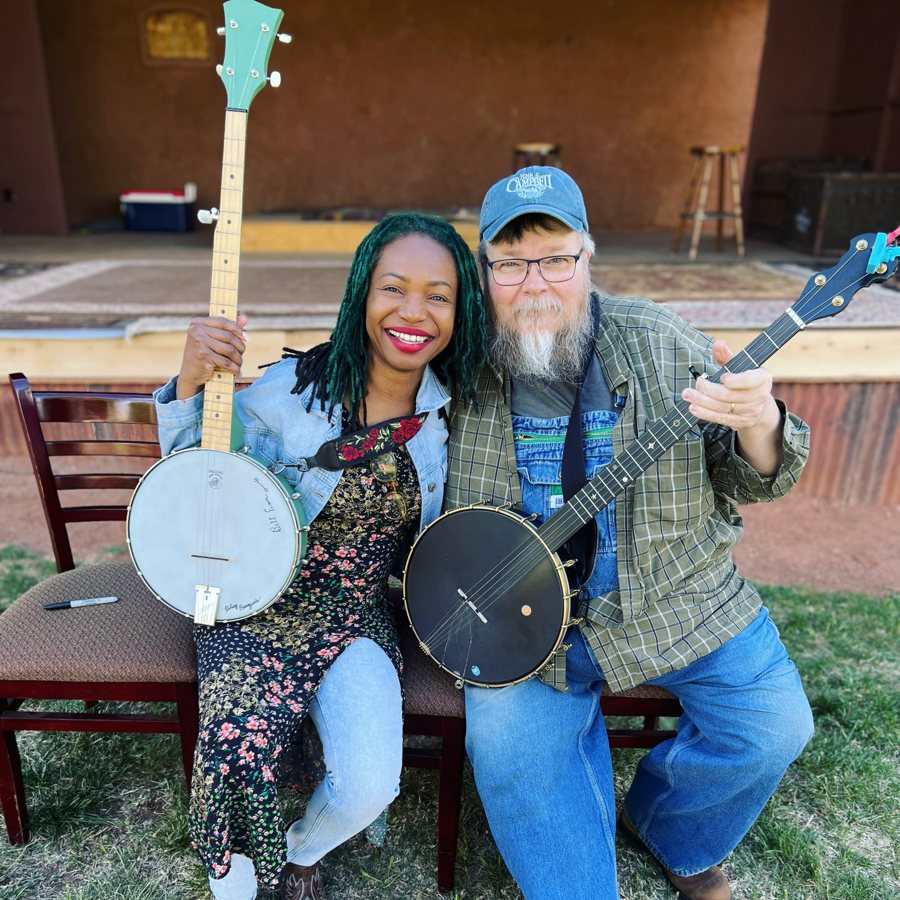
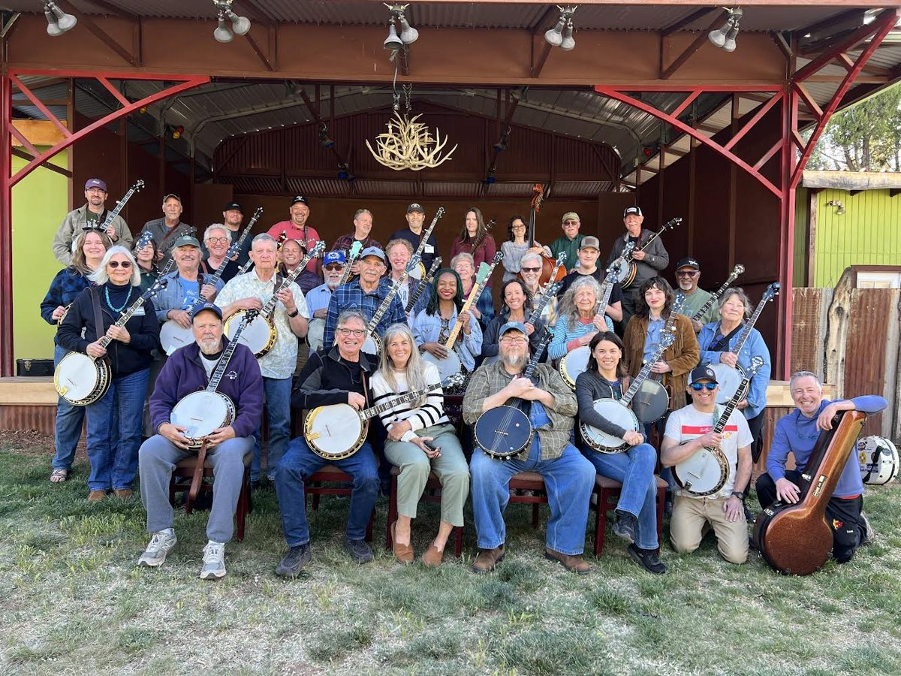
Banjo camp, New Mexico
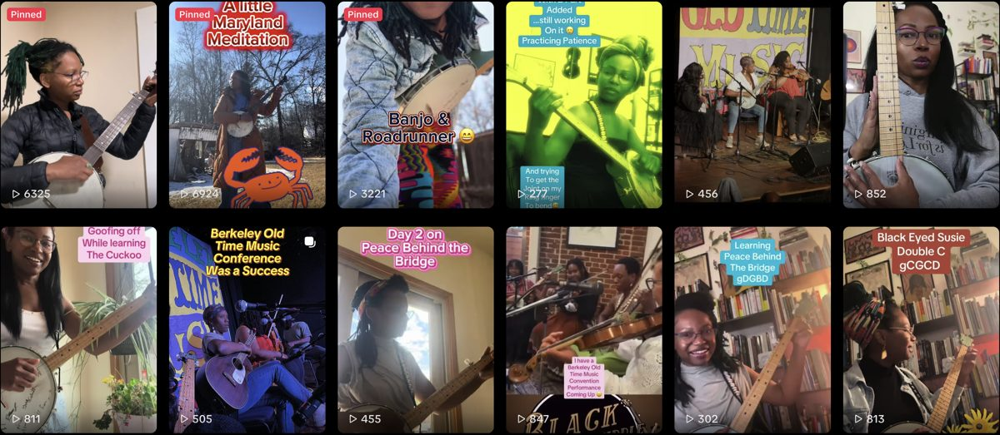
Follow the journey on TikTok@genellonbanjo4,472 followers · 22.8K likesI started playing sangban in the drum circle, while also still studying and performing banjo.
My first year serving on the board of Santa Fe TradFest, and chair of the festival's inaugural youth band showcase.
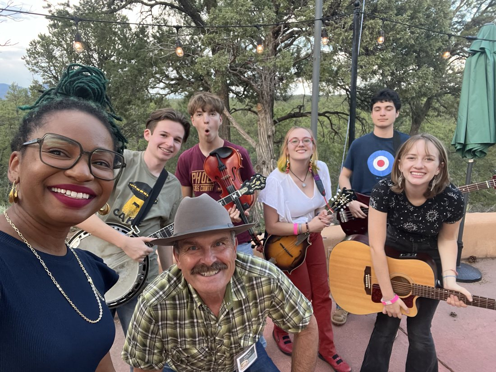
The fellowship deepened the journey, and the porch opened to share it.
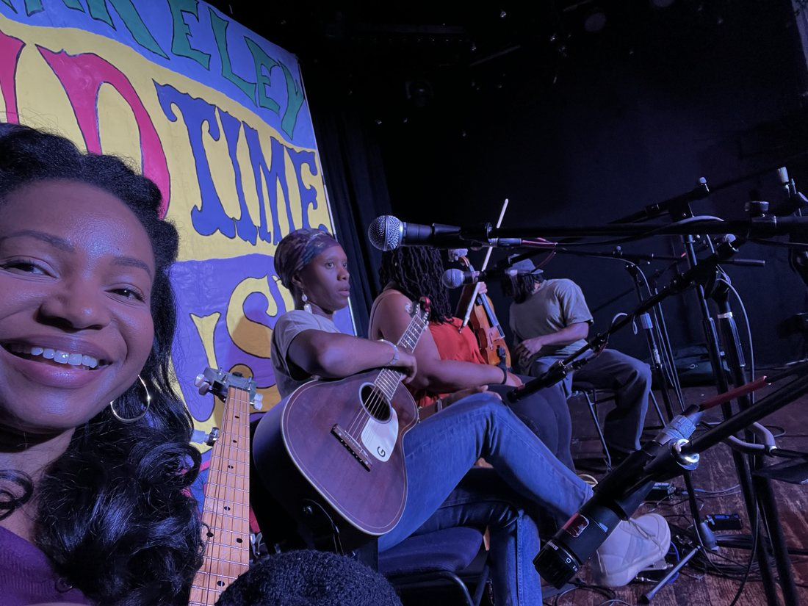
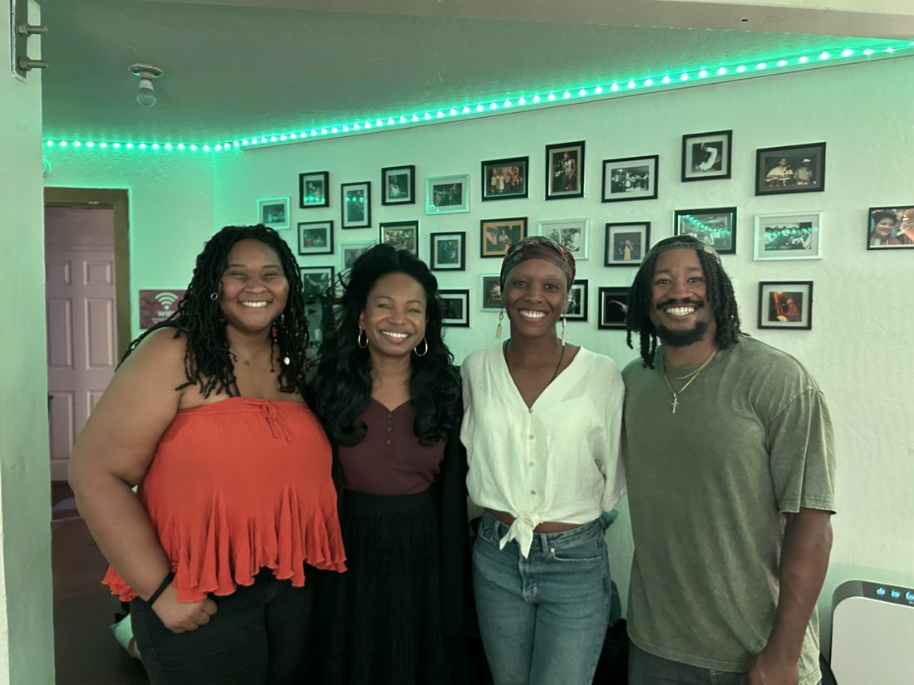
Where my roots reach
Hausa and Tikar roots, in present-day Cameroon.
Ancestry through Martinique, in the Caribbean.
Gullah Geechee heritage, and the indigo that runs through this site.
Home. Freetown, Howard County, near the Chesapeake Bay.
The virtual porch on Patreon
Clawhammer down-stroke mechanics, historical tunings, and acoustic physics.
How traditional gourd and open-back banjos work as vernacular technologies, attuned to biological materials, seasonal humidity, and animal hides.
New digital spaces, AI acoustic environments, and virtual tools that connect people to this archive.
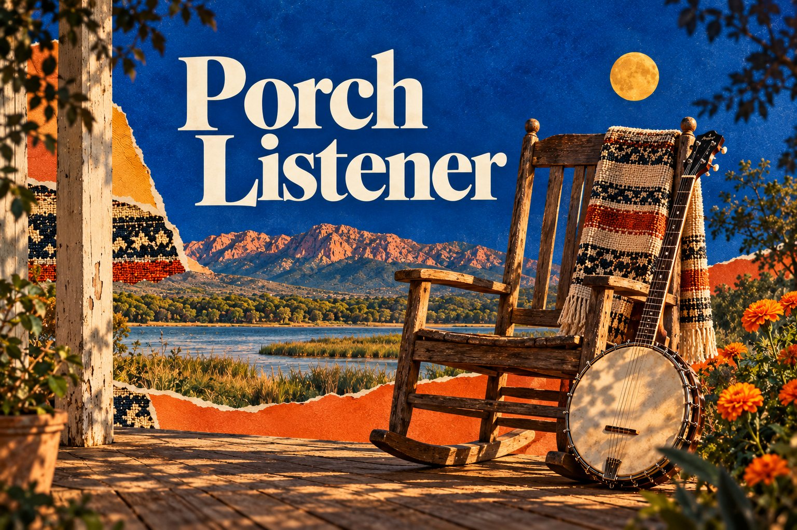
Fall soft launch · October to December 2026
$5 per month
Joining now funds archival research, fieldwork, and immersive prototyping. Each month this fall you'll receive:
Instructional tiers and participatory clinics open in January 2027.
On stage and in the community